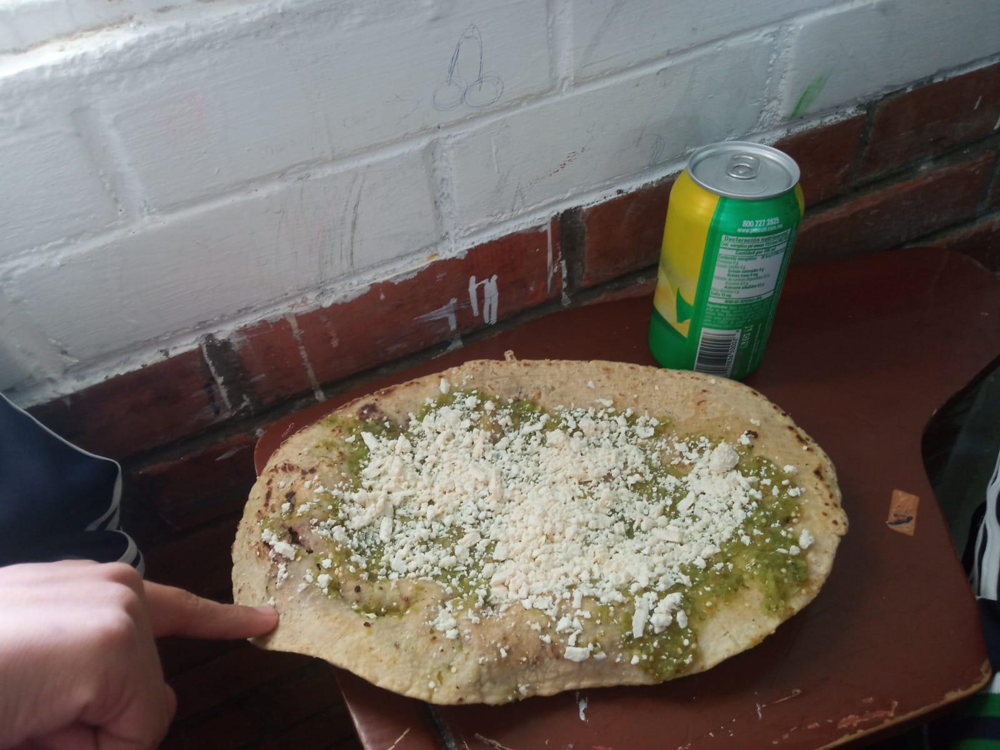
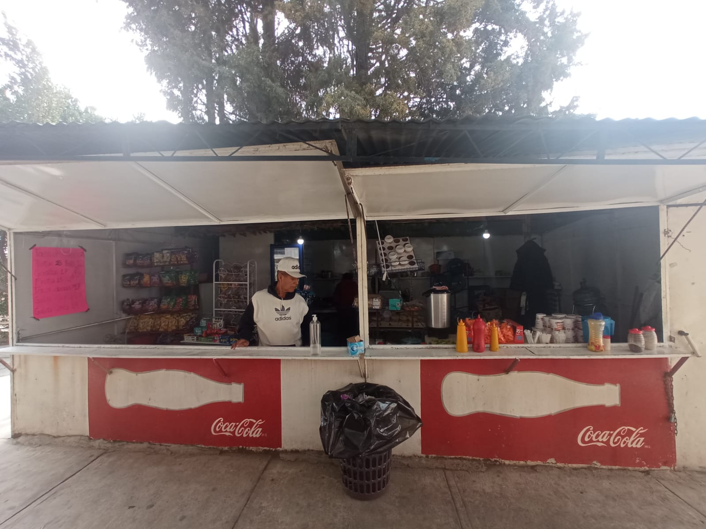
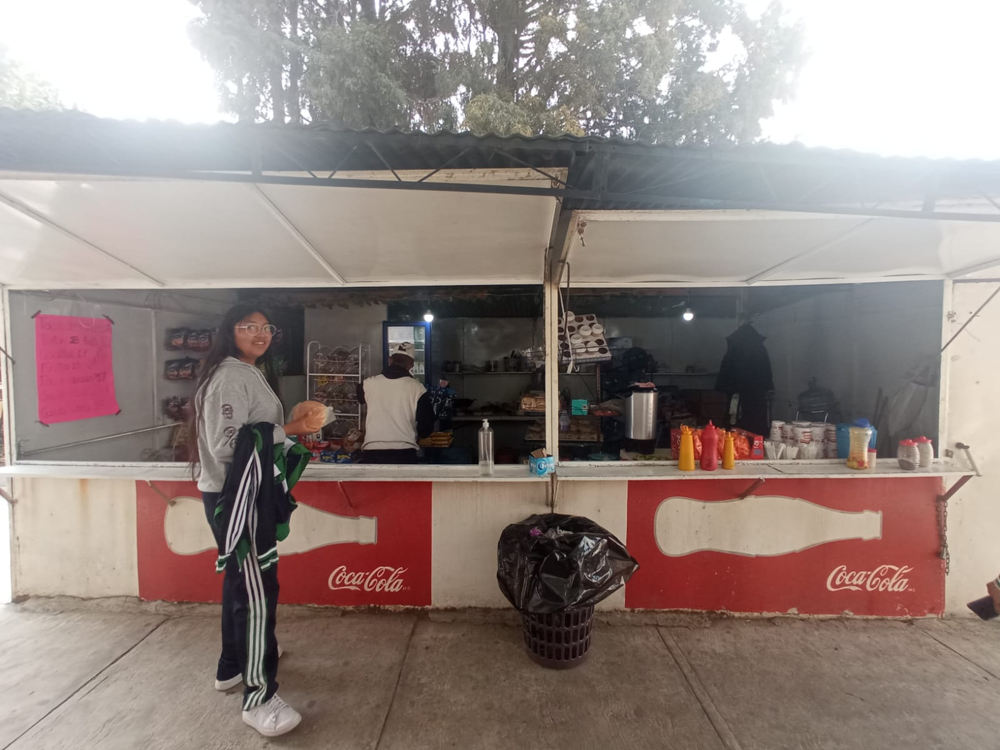
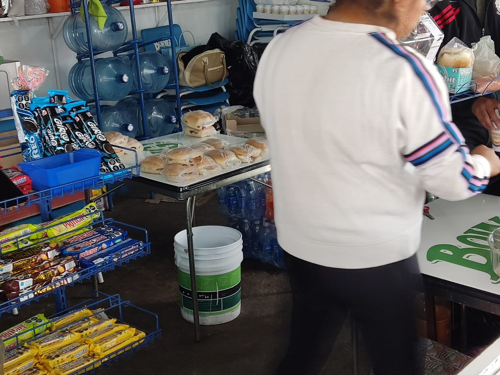
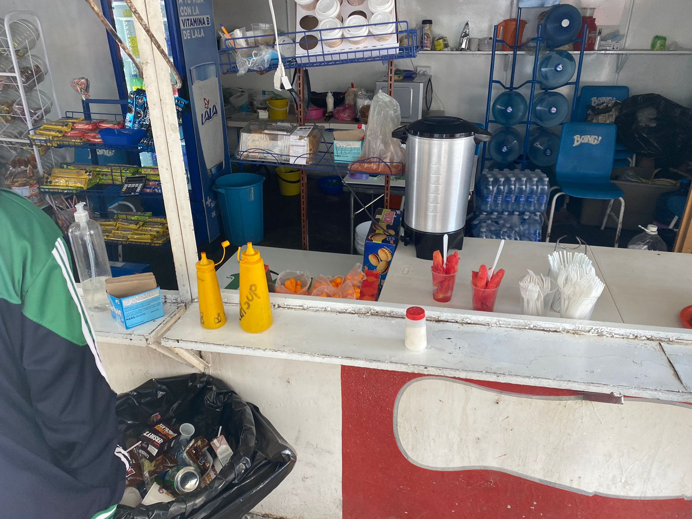

Tener una alimentación saludable es importante para mantener una buena salud y prevenir enfermedades. Una alimentación equilibrada debe contener una variedad de alimentos de todos los grupos alimenticios, como frutas, verduras, carnes, pescados, cereales, legumbres y lácteos.
|  |  |  |
|  |  |
| Consecuencias | A corto plazo | A largo plazo |
|---|---|---|
| Obesidad | Aumento de peso | Problemas de salud a largo plazo, como enfermedades cardiovasculares, diabetes tipo 2 y cáncer |
| Acné y piel grasa | Brotes de acné | Envejecimiento prematuro y problemas de piel a largo plazo |
| Problemas digestivos | Hinchazón, gases y estreñimiento | Enfermedades intestinales y problemas de digestión crónicos a largo plazo |
| Bajo rendimiento académico | Fatiga y dificultad para concentrarse | Problemas de aprendizaje y bajo rendimiento académico a largo plazo |
Recuerda que una alimentación saludable es fundamental para mantener un cuerpo y mente en buen estado. Consumir una variedad de alimentos frescos y nutritivos puede proporcionarte los nutrientes necesarios para estar saludable y en forma. Asegúrate de incluir en tu dieta una variedad de frutas y verduras, granos enteros, proteínas magras, grasas saludables y limitar el consumo de alimentos procesados y con alto contenido de azúcar. Además, trata de mantener una buena hidratación consumiendo suficiente agua y limitando el consumo de bebidas azucaradas. Recuerda que pequeños cambios en tu dieta pueden marcar una gran diferencia en tu salud y bienestar a largo plazo. ¡Así que adelante, haz elecciones saludables y disfruta de una vida activa y feliz!